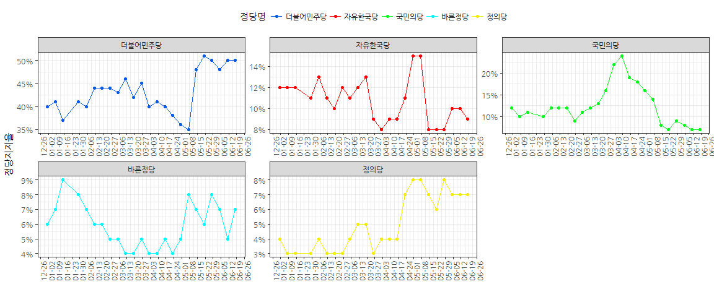
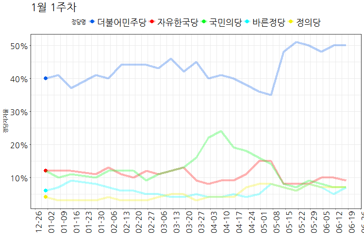

데이터 과학
1. 정적 그래프에서 부드러운 동영상 그래프까지.
ggplot을 통해서 정적 그래프를 그려봤다면, 시각화를 통해 더 많은 감동을 선사하고자 .git 파일을 비롯한 동영상이 최근 많이 도입되고 있다. 제19대 대통령선거를 거치면서 선거에 다양한 시각화 통계기법들이 도입된 것도 사실이다. 이제, 정적인 그래프에서 시작하여 정말 부드러운 동영상 그래프까지 차근차근 만들어 보자.
2. 정당 지지율 데이터
gganimate, tweenr 팩키지가 애니메이션 그래프를 위해 필요한 팩키지다. 그전에 나무위키 갤럽 정당 지지율 데이터를 rvest 팩키지를 통해 긁어와서 데이터 전처리 과정을 거쳐 시각화할 수 있는 데이터프레임으로 변환시킨다.
# 0. 환경설정 ------------------------------
# library(ggplot2)
# library(rvest)
# library(tidyverse)
# library(stringr)
# library(gganimate) # devtools::install_github("dgrtwo/gganimate")
# library(extrafont)
# library(tweenr) # devtools::install_github("thomasp85/tweenr")
# 1. 정당지지율 데이터 긁어오기 ------------
Sys.setlocale("LC_ALL", "English")[1] "LC_COLLATE=English_United States.1252;LC_CTYPE=English_United States.1252;LC_MONETARY=English_United States.1252;LC_NUMERIC=C;LC_TIME=English_United States.1252"
gallop_url <- "https://namu.wiki/w/%ED%8B%80:%ED%95%9C%EA%B5%AD%EA%B0%A4%EB%9F%BD%202017%EB%85%84%20%EC%A0%95%EB%8B%B9%20%EC%97%AC%EB%A1%A0%EC%A1%B0%EC%82%AC"
gallop_html <- read_html(gallop_url)
gallop_tbl <- html_table(gallop_html, fill=TRUE)[[1]]
Sys.setlocale("LC_ALL", "Korean")[1] "LC_COLLATE=Korean_Korea.949;LC_CTYPE=Korean_Korea.949;LC_MONETARY=Korean_Korea.949;LC_NUMERIC=C;LC_TIME=Korean_Korea.949"
# 2. 데이터 전처리 ------------
names(gallop_tbl) <- gallop_tbl[1,]
gallop_df <- gallop_tbl %>% dplyr::filter(!(row_number() %in% c(1, 26, 27))) %>%
mutate(더불어민주당 = as.numeric(str_replace_all(더불어민주당, "%", "")),
국민의당 = as.numeric(str_replace_all(국민의당, "%", "")),
자유한국당 = as.numeric(str_replace_all(자유한국당, "%", "")),
바른정당 = as.numeric(str_replace_all(바른정당, "%", "")),
정의당 = as.numeric(str_replace_all(정의당, "%", ""))) %>%
dplyr::select(주차, 더불어민주당, 국민의당, 자유한국당, 정의당, 바른정당)
gallop_date <- seq(as.Date('2017-01-01'), length.out=25, by = 'week')
gallop_date <- gallop_date[-4]
gallop_df <- data.frame(날짜=gallop_date, gallop_df)
gallop_viz_df <- gallop_df %>% gather(정당, 지지율, -주차, -날짜) %>%
mutate(지지율 = 지지율 / 100) %>%
mutate(정당 = factor(정당, levels=c("더불어민주당", "자유한국당", "국민의당", "바른정당", "정의당")))3. 정당 지지율 변화 시각화
3.1. 정적 그래프
가장 먼저 정당별 시간에 따른 지지율 변화를 ggplot을 통해 주단위로 시각화한다. 각 정당별로 색상이 있어 RGB 색상을 ggplot에 입히는 것도 중요하다.
# 3. 시각화 ------------
party_colors <- c("#065ce8", "#ff0000", "#07f91f", "#00faff", "#f2ee09")
## 3.1. 전체정당 지지율 시각화 ------------------------------------
ggplot(gallop_viz_df, aes(x=날짜, y=지지율, group=정당, color=정당)) +
geom_point(size=1.5) +
geom_line() +
scale_x_date(date_breaks="1 week", date_labels="%m-%d") +
scale_y_continuous(labels=scales::percent) +
theme_bw(base_family="NanumGothic") +
scale_colour_manual(name="정당명", values=party_colors) +
labs(x="", y="정당지지율", color="") +
theme(legend.position = "top",
axis.text.x = element_text(angle = 90, hjust = 1))
3.2. small multiple 정적 그래프 시각화
전체 정당을 높고 비교할 때는 한장의 그래프에 모든 정당의 시간에 따른 지지율 변화를 보여주는 것이 좋지만, small multiple 개념을 도입하면, 각각의 정당별로 쪼개서 비교하는 것도 데이터를 보는 입장에서는 편하다.
## 3.2. 정당별 지지율 시각화 ------------------------------------
ggplot(gallop_viz_df, aes(x=날짜, y=지지율, group=정당, color=정당)) +
geom_point(size=1.5) +
geom_line() +
scale_x_date(date_breaks="1 week", date_labels="%m-%d") +
scale_y_continuous(labels=scales::percent) +
theme_bw(base_family="NanumGothic") +
scale_colour_manual(name="정당명", values=party_colors) +
labs(x="", y="정당지지율", color="") +
theme(legend.position = "top",
axis.text.x = element_text(angle = 90, hjust = 1)) +
facet_wrap(~정당, scale="free")
3.3. 정당지지율 변화를 애니메이션으로 만들기
데이터가 시계열 데이터로 시간의 개념을 담겨있기 때문에 시간의 흐름에 따른 애니메이션으로 그래프를 표현하게 되면 새로운 인사이트를 얻을 수 있다. gganimate 팩키지가 ggplot에 프레임 개념을 넣어 애니메이션으로 쉽게 변화시키는 것을 도와준다.
## 3.3. 정당별 지지율 변화 애니메이션 ----------------------------
party_gg <- ggplot(gallop_viz_df, aes(x=날짜, y=지지율, group=정당, color=정당)) +
geom_point(aes(frame = `주차`), size=3.5) +
geom_line(alpha=0.3, size=1.5) +
scale_x_date(date_breaks="1 week", date_labels="%m-%d") +
scale_y_continuous(labels=scales::percent) +
theme_bw(base_family="NanumGothic") +
scale_colour_manual(name="정당명", values=party_colors) +
labs(x="", y="정당지지율", color="") +
theme(legend.position = "top",
axis.text.x = element_text(angle = 90, hjust = 1),
axis.text=element_text(size=16, color="black"),
legend.text=element_text(size=18),
plot.title = element_text(size=22))
# gganimate(party_gg, "정당지지율_2017.gif", ani.width = 640, ani.height = 480)
# gganimate(party_gg)
3.3. 자연스로운 애니메이션
gganimate 팩키지를 통해 애니메이션 구현이 가능하지만, 동영상같은 자연스러운 영상을 구현하기 위해서 tweenr 팩키지가 필요하고 적절히 자료형을 맞춰 주면 아주 부드러운 동영상 애니메이션을 볼 수 있게 된다.
## 3.4. 정당별 지지율 부드러운 변화 애니메이션 ----------------------------
gallop_viz_df_tw <- gallop_viz_df %>% dplyr::select(-주차) %>%
split(.$날짜) %>%
tween_states(tweenlength = 5, statelength =0, ease ="linear", nframes = 100) %>%
mutate(정당 = factor(정당, levels=c("더불어민주당", "자유한국당", "국민의당", "바른정당", "정의당")))
party_tw_gg <- ggplot(gallop_viz_df_tw, aes(x=날짜, y=지지율, group=정당, color=정당)) +
geom_point(aes(frame=.frame), size=3.5) +
geom_line(alpha=0.3, size=1.5) +
scale_x_date(date_breaks="1 week", date_labels="%m-%d") +
scale_y_continuous(labels=scales::percent) +
theme_bw(base_family="NanumGothic") +
scale_colour_manual(name="정당명", values=party_colors) +
labs(x="", y="정당지지율", color="") +
theme(legend.position = "top",
axis.text.x = element_text(angle = 90, hjust = 1),
axis.text=element_text(size=16, color="black"),
legend.text=element_text(size=18),
plot.title = element_text(size=22))
# gganimate(party_tw_gg, "정당지지율_2017_tw.gif", ani.width = 640, ani.height = 480, title_frame=FALSE, interval = .1)
# gganimate(party_tw_gg, interval=0.1)